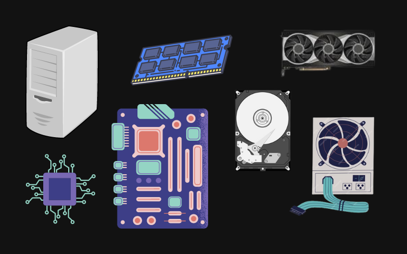

A lot of people know what a PC is, but most of the time they can't explain it when asked about it. So, a Personal Computer (PC) is a digital computer designed for use by only one person at a time. A typical personal computer assemblage consists of a Central Processing Unit (CPU), which contains the computer's arithmetic, logic, and control circuitry on an integrated circuit; two types of computer memory, main memory, such as digital random-access memory (RAM), and auxiliary memory, such as magnetic hard disks and special optical compact discs, or read-only memory (ROM) discs (CD-ROMs and DVD-ROMs); and various peripheral devices, including a display screen, keyboard and mouse, and printer.
The history of the personal computer as a mass-market consumer electronic device began with the microcomputer revolution of the 1970s. After the development of the microprocessor, individual personal computers were low enough in cost that they eventually became affordable consumer goods. Early personal computers - generally called microcomputers - were sold often in electronic kit form and in limited numbers, and were of interest mostly to hobbyists and technicians.
Depending upon the internal structure and subsequent features and applicability, computer systems can be factorized as follows -
Computer hardware includes the physical components of a computer. Personal computers (PCs) are electronic devices that use microchips to process information and may include desktop computers, laptops or tablets. Since a computer comprises many hardware components, they work together and depend on each other to function properly.
Click on any component in the below image to know more about it -
